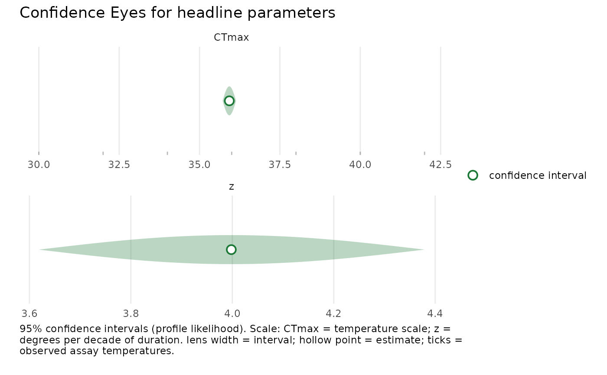

Confidence-Eye (or line) display of headline confidence intervals
Source:R/plotting.R
plot_confidence_eye.Rdplot_confidence_eye() draws the freqTLS Confidence Eye for one or more
headline parameters (CTmax, z, or any other confint.profile_tls()
target, including grouped names). It is a HORIZONTAL forest display: each
parameter (and group level) is a row, the parameter value runs along the
x-axis, and the confidence interval is a short, wide pale lens with a
hollow point estimate. The shallow horizontal lens reads as a confidence
interval, never a posterior density – freqTLS intervals are likelihood
confidence intervals, so the wording is "confidence", never
"posterior". The layout follows the gllvmTMB / drmTMB
Confidence-Eye contract.
Arguments
- fit
A
profile_tlsfit fromfit_tls().- parm
Character vector of target parameter names. Defaults to
c("CTmax", "z")(the headline quantities). Grouped names (e.g."CTmax:larva") are accepted.- method
One of
"profile"(default),"wald", or"bootstrap"; forwarded toconfint.profile_tls().- level
Confidence level (default
0.95).- style
One of
"eye"(default; pale horizontal lens + hollow point) or"line"(a confidence-interval bar with caps + hollow point, no lens).- raw_data
Logical; overlay observed assay temperatures as a rug on temperature-scale rows (default
TRUE).- fallback, nboot, boot_seed, cores
Forwarded to
confint.profile_tls(): control the parametric-bootstrap fallback for non-closing profiles (so the eye draws an honest bootstrap lens instead of only a hollow point), make it reproducible, and parallelise the refits. DefaultsTRUE,1000,NULL, and1.- ...
Reserved; must be empty.
Details
Honest fallback for open profiles
When a profile does not close (conf.status is "open_lower",
"open_upper", "open_both", or a bound is NA), no lens is drawn for that
row: a hollow point marks the estimate and the subtitle flags the open
interval. The eye is never fabricated from an open profile. A
"wald_fallback" interval (e.g. up) still gets a lens, with the source
noted in the caption.
Raw data
With raw_data = TRUE (default), the observed assay temperatures are drawn as
a rug beneath any temperature-scale row (CTmax), showing the data support
and flagging extrapolation when CTmax sits outside the assayed range.
Parameters on different scales (temperature for CTmax, a positive
multiplier for z) are stacked in separate panels with a free x-axis.
Examples
d <- simulate_tls(family = "binomial", CTmax = 36, z = 4, seed = 1)
fit <- fit_tls(d, y = survived, n = total, time = duration, temp = temp,
family = "binomial", tref = 1)
plot_confidence_eye(fit, parm = c("CTmax", "z"))
